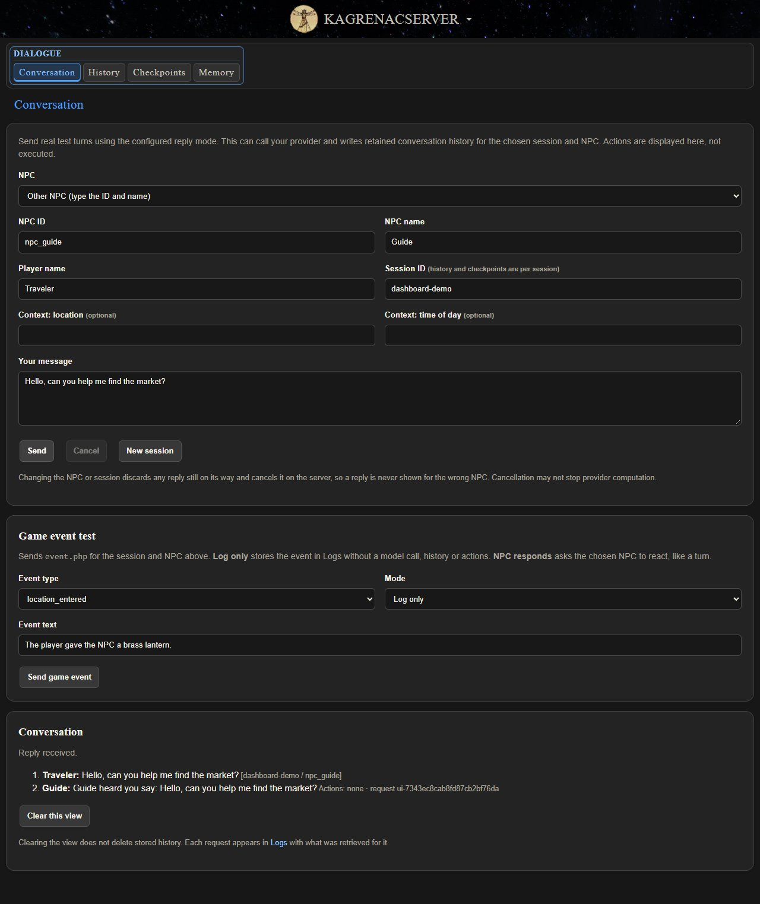

Testing
A mod is tested in four separate ways, and each says something different. Your agent reports them separately, and only you can confirm what happens in game.
Four Kinds Of Evidence
| Kind | Shows | Does not show |
|---|---|---|
| Server and fixtures | The server is deployed and healthy, and automated checks pass | Anything about the game or a real provider |
| Game-side build | The actual game mod builds and is installed for your game version | That it loads or works in game |
| Provider | Your chosen dialogue model or voice service answers a real call | That the player sees or hears it |
| In game | You played it: the loop, heard voice and each action's visible result | Other games or other loaders |
A generated sound file is not heard voice, and an action the game accepted is not an action you saw happen. Each action gets its own in-game check.
In-Game Checks
Start the game the normal way, using its offline loader profile if it needs one (see Game integration), and check:
- Loading. The mod loads and connects by itself, with no extra command.
- Chat. You type your own line to the character the chat box shows, get a reply, and your controls work normally afterwards.
- Automatic remarks. If you asked for them, the real game event triggers one and it stops cleanly.
- Voice. If you asked for voice, you hear it. If you asked for speech input, push-to-talk fills the draft and Enter sends it.
- Each action. You ask, and see the result in game.
- No server. With only this mod's server route unreachable (your agent can set this up), and DwemerDistro and other mods left running, the game stays playable and tells you, and the next request works once it is back.
Cancellation And Stale Replies
A reply that arrives too late must not play. While a reply is still coming, try leaving the character, loading a save, starting another conversation and quitting. The late reply should be dropped quietly, with no crash or hang. Failed requests are never retried automatically.
Find A Request In Logs
Every request has an ID. On your mod's dashboard, open Control Panel > Logs, filter by Request ID and open Details. Voice, NPC selection and memory calls are on Control Panel > Connector calls.
completemeans the server finished, not that the game showed or did anything.cancelledorsupersededis expected after a cancel, a character change or a session change.
When asking for help, share request IDs and error codes, never tokens or keys.
Optional Dashboard Checks

Roleplay > Conversation lets you send a test line and see the reply, and Game event test sends a test game event. It is useful for checking bios, facts and providers, but it shows actions without running them and is not an in-game test.
Troubleshooting
| Symptom | Check |
|---|---|
| The game says the server is unavailable | Start DwemerDistro, then try again in game. |
401 unauthorized | The game mod's connection file does not match this server. Ask your agent to pair again. |
502 llm_unavailable | The provider failed. Check the key and model with Send test. |
503 not_migrated or schema_too_new | The code and database do not match. See Updates & recovery. |
| The dashboard cannot save settings | Ask your agent to deploy again; it repairs ownership. |
Full reference: START_HERE.md, Troubleshooting by request ID and SETUP.md, Troubleshooting.
Next step: Updates and recovery.